Indyspot AI Corp · Engineering Manager · 2026-11-09
Section 01
이번 주에 정한 규칙과 어디까지 운영에 나갔는지를 먼저 정리합니다.
0c99edc8
autoplay=1
autorotate=1
nocontrol=1
03fe1303
d16bd098
2c7259153
7b8a6e3cd
48f6c41bf
paperclip
5f92965da
6c21a22
05b31e1
:5174
Section 02
투어 XML↔DB 동기화는 진행 공유이고, 나머지는 완료 보고입니다.
레거시 투어는 어드민 저장 시 XML 을 DB 기준으로 다시 만들어, 손편집 제목·핫스팟·flat 장면이 사라질 수 있습니다. 이 위험은 지금도 운영에 남아 있어 해당 투어의 어드민 저장·재생성은 금지 상태입니다.
b83d43c3
blocked
c043f078
in_progress
레거시 XML 2,753개의 툴팁 31,791개를 11/06 운영 덤프와 대조했습니다. 다른 것은 44건이고, 운영 화면을 직접 보고 오너가 묶음별로 정했습니다.
&
&
[[
[
영향: 위치·글자를 바꾸는 DB 행은 여러 투어가 공유해 2291·2661·2757 도 재생성하면 새 값으로 바뀝니다(오너 결정 범위). 남은 일: 결정을 배포안에 반영 → 새 배포 승인 카드 → 오너 승인 후 운영 DB·XML 반영. 플랫폼 툴팁 복원 IND-9253 반영 여부는 EM 판단 대기입니다.
운영 화면(XML 위치)과 DB 위치가 달랐던 사례입니다. 오너 결정에 따라 DB 위치를 XML 위치로 변경합니다.
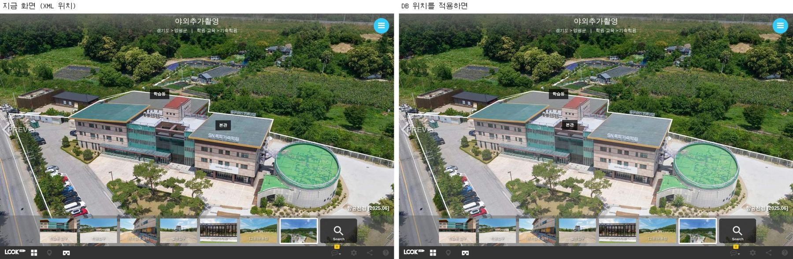
같은 건물을 XML 은 «그...찻집», DB 는 «기념품샵»으로 부르던 사례입니다. DB 글자를 «그...찻집»으로 변경합니다.
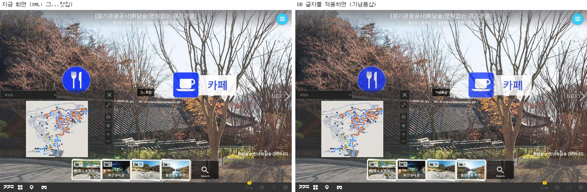
레거시 XML 선언과 실제 타일이 어긋나 콘텐츠가 안 보이던 문제를 전수 수정했고, 그 수정이 만든 회귀를 오너 지적으로 찾아 되돌렸습니다.
16bfe2b5
aea0dfed
판단 착오도 함께 보고합니다. 처음 «이음매 결함 100건»으로 분류했지만 원래 결함이 아니라 IND-9060 배포가 만든 회귀였고, 오너가 「기존엔 잘 보였다」고 지적해 배포 전후 XML 비교로 확인했습니다.
2529 Kay Park 만다라 전시 9씬입니다. 레거시 XML 을 손으로 제작한 씬이라 DB 값 자동 생성으로는 같은 화면이 나오지 않아, 레거시 씬 본문을 그대로 쓰는 방식을 플랫폼에 추가했습니다. (29336 · 29338 · 29339)
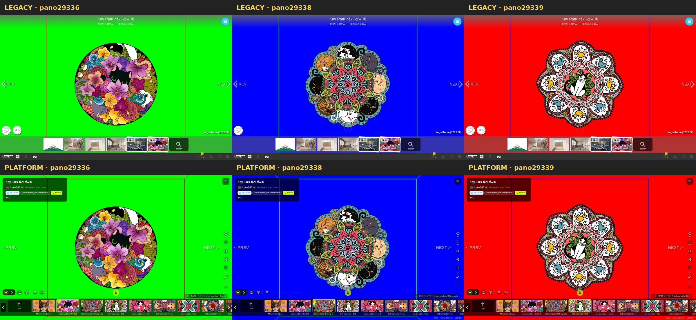
격자 배경·프레임·회전 이미지·PREV/NEXT·나레이션이 그대로 동작합니다. (29340 · 29341 · 29342)
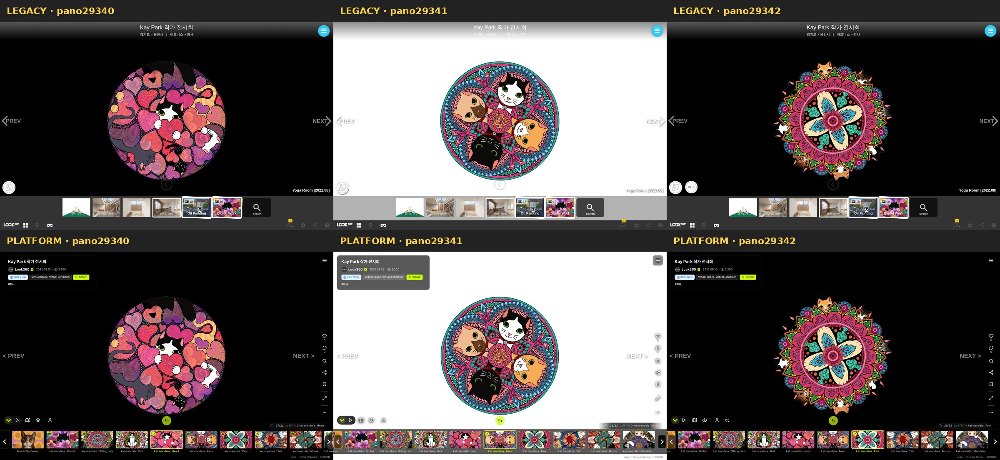
실측(11/09 · 레거시 운영 vs 플랫폼 dev · 1440×900): 9씬 모두 양쪽에서 열리고 배경·프레임·만다라 크기가 육안 비교로 같습니다. (29343 · 29344 · 29376)
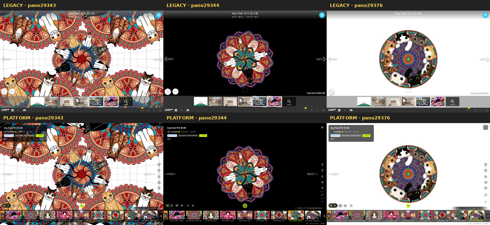
IND-9100 정리 결과
2529 남은 차이 (서비스 문제 아님)
cylinder 재생성 위험(827 · 1928)은 IND-9134 트랙으로 넘겼습니다. 삭제는 IND-9105 에서 별도로 진행했고 이 EPIC 의 삭제는 0건입니다.
전 레코드가 2026-08-01 로 만료돼 유효 큐레이션 0건 → 홈 히어로가 100% 랜덤으로 채워지고 있었습니다.
ORDER BY display_order, RAND()
메인 랜덤 풀에 무엇이 들어 있는지 바로 보이도록 테이블뷰를 기본으로 두고, 상태 필터·검색·행 클릭 수정/삭제를 넣었습니다. 달력뷰로도 전환할 수 있습니다.
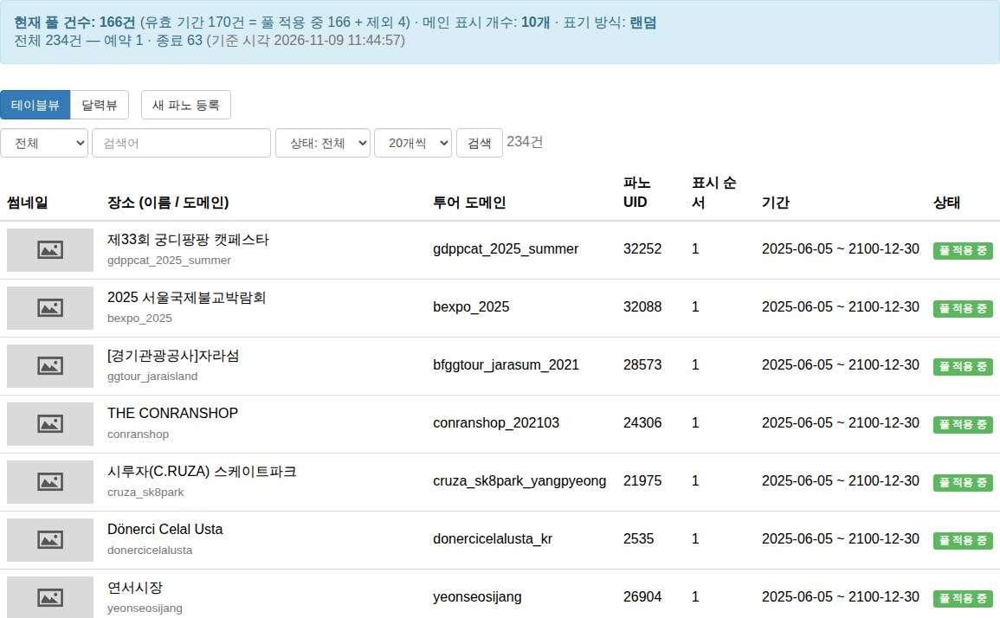
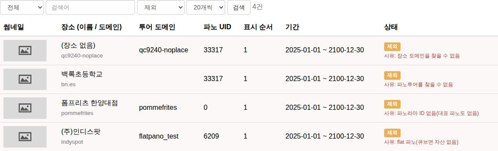
상태: 풀 적용 중 · 예약 · 종료 · 제외(사유 표시)
로컬 QC 화면이라 썸네일은 회색이고, 제외 4건은 QC 가 넣은 임시 데이터입니다. 운영은 풀 166건 · 제외 0건입니다(SELECT 실측).
두 이름이 다른 행은 원래 이름 → 투어 이름(회색 → 빨강)으로 표시하고, 행별 「↩ 원래 이름으로」와 「↩ 전체 원래 이름으로 (N)」을 넣었습니다. 잘못 붙은 컬럼 헤더도 고쳤습니다.
원래 이름 → 투어 이름
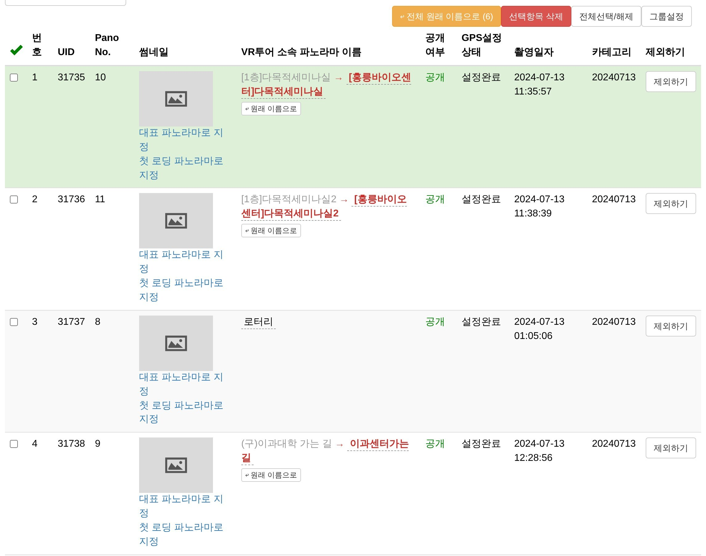
투어 2686 로컬 개발 환경 캡처이며 썸네일은 자리표시 이미지입니다. 되돌린 뒤 뷰어 제목까지 바꾸려면 기존처럼 「XML 생성」을 따로 눌러야 합니다.
Utils v0.1.4-beta.6(GitHub 프리릴리스). Hugin·ImageMagick·ExifTool 을 앱에 포함해 작업자 PC 에 따로 설치할 필요가 없습니다.
Section 03
콘텐츠 링크 방향 공유와 이번 주 완료 건, OS 설정에 따른 애니메이션 차이를 공유합니다.
IND-8982 로 장소 SNS 는 보이게 됐지만, 콘텐츠 «자체»를 홍보할 링크는 넣을 자리가 없었습니다. 예로 「[경기관광공사] 무장애 경기관광 W지우리조트」는 장소 SNS 에 리조트 계정만 들어가 캠페인 페이지를 알릴 수 없습니다.
l3_place_sns
127.0.0.1:3308
장소 1457 에 website 2개 + instagram + youtube 를 넣어 표시되는 모습입니다.
위 건은 원장 기준 완료 보고 대상입니다. 회의 메모에서 나온 건(IND-9148 · IND-9154 · IND-9155 · IND-9255 · IND-9257)은 11/03 회의 메모 #6·#7·#22·#23·#10·#15 를 발주해 처리했습니다.
VR스토리 나레이션 점 3개가 안 움직인다는 문의의 원인은 코드 오류가 아니라 OS 접근성 설정(prefers-reduced-motion: reduce)이었습니다. 같은 화면이 PC 마다 다르게 보일 수 있습니다.
prefers-reduced-motion: reduce
running
reduce
animation: none
미결: 점 3개를 OS 설정과 무관하게 항상 움직이게 할지는 정하지 않았습니다.
matchMedia('(prefers-reduced-motion: reduce)').matches
VrStoryControls.vue:337
default.css:1230,1250,1271
in_review
01f07942
Section 04
이전 근로장학생이 등록해 둔 기존 데이터의 재분류입니다. 크롤러 신규 수집(섹션 05)과는 별개입니다. 검토 시트는 드라이브 「데이터 수정 & 개선」 폴더로 옮겼고, 시트 내용은 그대로 둡니다.
jev 는 «선택지 고르기»는 싸고 빠르지만, 규칙을 적용하거나 계층을 따라 내려가는 판단에는 약했습니다.
외부VR 재분류 · 01
플랫폼 분류표(소분류 207개)와 기존 360VIEW 배정 사례를 기준으로 삼았습니다.
[기관명]
[서울역사박물관]
[양천구청] 양천둘레길
[경기관광공사]남송미술관
외부VR 재분류 · 02
GPS 를 기본으로, 의심스러운 좌표는 주소로 다시 찾았습니다.
«GPS 는 정확하다»는 전제는 이번 데이터에선 성립하지 않았습니다. 원본 좌표 정리는 별도 과제입니다.
외부VR 재분류 · 03
시트 하나에 모두 들어 있습니다. 검토할 열이 맨 앞에 있습니다.
「판정」을 비워 둔 행은 «확정»으로 간주해 반영하려 합니다. 다르게 하려면 알려 주세요.
11/09 갱신: 5번 카드 0c99edc8 은 오너가 (a) «vr-list 검색과 똑같이»로 답변했습니다.
시트 검토가 끝나면 확정된 행만 반영하고, 반영 전후 vr-list·검색 노출 건수를 실측해 보고합니다.
Section 05
CMS for VR Crawler 로 새로 수집한 데이터를 플랫폼 외부VR 로 등록하는 작업입니다. 섹션 04 의 기존 데이터 재분류와는 결이 다릅니다.
수집 규모: 검토 대기 18,755 · 승인 114 · 게시 1 · 제외 1,679,082(자동 1,675,984 · 사람 3,098) · 접속 불가 28,264.
수집 쪽은 「수집 파이프라인」 메뉴로 분리했습니다. 이슈 없이 저장소 cms-for-vr-crawler 에서 진행 중입니다.
cms-for-vr-crawler
place_groups.scene_images
f947c74
Section 06
차트 데이터 정리는 운영에 반영했고, 기준에 맞지 않는 155주를 발견했습니다.
발단은 pop 1966 41위 「[]Time」(가수 빈 값) 신고입니다. 멜론 «차트 파인더»를 desktop-kabkee Chrome 으로 열어 대조했고, 로그인 없이 과거 차트가 다 보입니다(IND-7804 의 «원본 확보 불가» 판단을 뒤집습니다).
반영 후 두 사이트 모두 «같은 순위 여러 행 0 · 같은 주 같은 곡 중복 0 · 가수/제목 빈 차트 행 0». 백업 ~/weeklychart-chart/fix-backup/20261106-*.sql. 실수도 보고합니다 — 기준 적용이 늦어 2016-02-14 를 잘못 정리했다가 같은 날 복구했습니다(가요 100/100). 그 밖에 IND-9156 영문 병기 «romanized»·«translated» 태그를 제거했습니다.
~/weeklychart-chart/fix-backup/20261106-*.sql
불일치 2주: 2014-09-28(출처 불명) · 2016-03-27(03-20 복사본)
DB 에 없는 주: 2016-02-21 · 2020-02-16 · 2022-09-11 ~ 2023-01-15 19주 등
가사를 보려고 스크롤해도 영상이 오른쪽 아래 400×225 로 떠서 재생이 이어집니다. kpop·pop PC 적용 · 재생 전 안 뜸 / 재생 후 고정 / 닫기 후 안 뜸을 운영에서 확인했습니다.
스크롤 전 — 영상이 맨 위
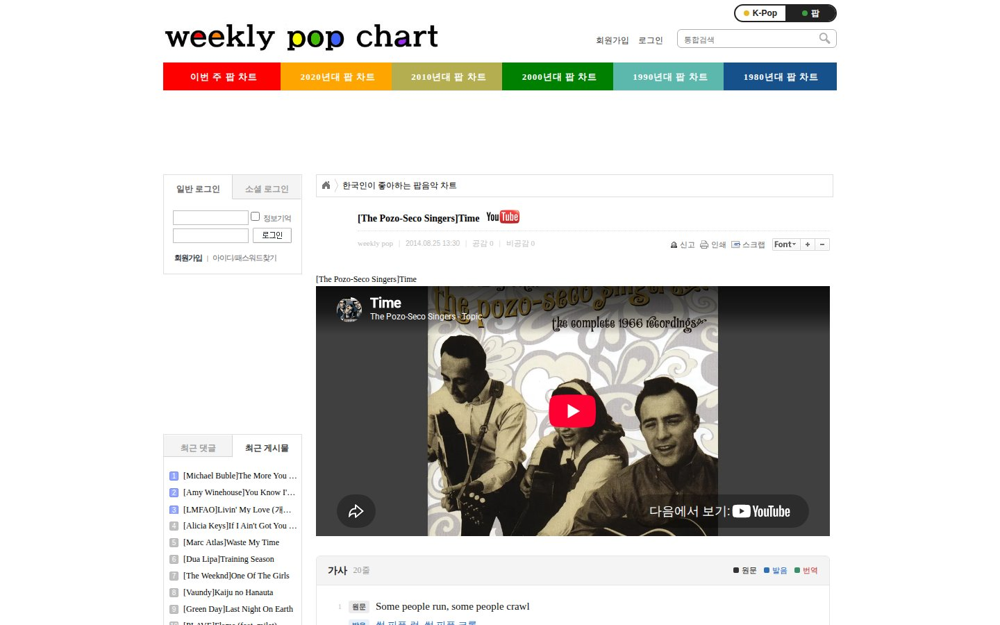
스크롤 후 — 가사 위 미니 플레이어
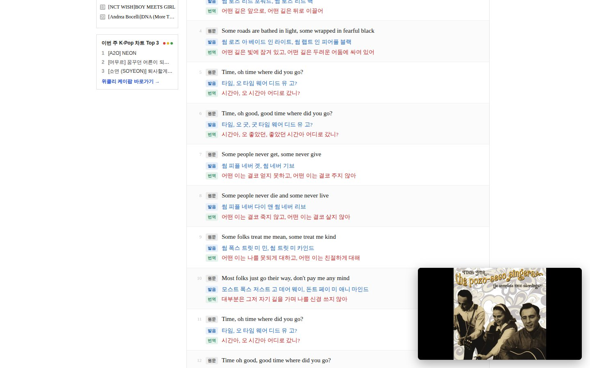
배너 3개 중 네이버 블로그만 깨져 보였습니다. 원본이 어느 저장소에도 없어(두 버킷 전수 검색 0건) 같은 형식으로 새로 만들어 313×100(27KB)으로 올리고 블로그 링크를 걸었습니다.
적용 전
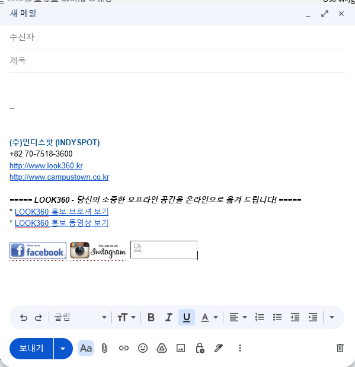
적용 후
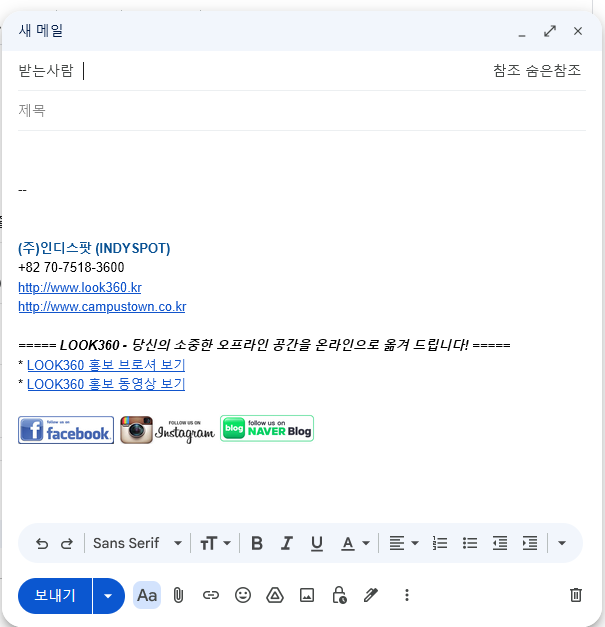
IYCX3QT36A61ZSHHRGD7ZJB8K
Section 07
시안 선택과 방향 결정이 중심입니다. 결정이 나오면 그 뒤에 발주합니다.
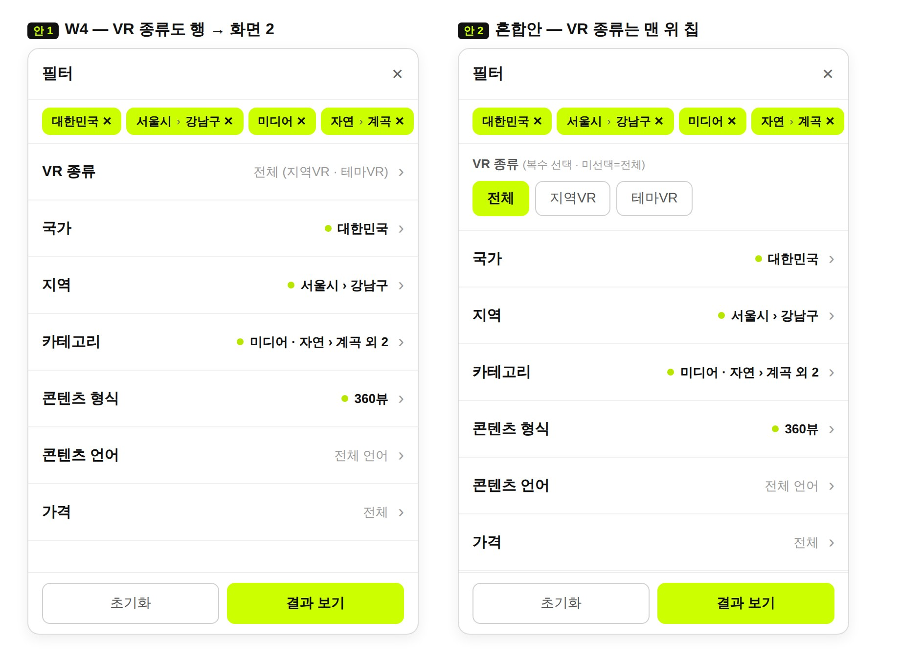
두 안 모두 필터 버튼 하나(PC 드롭다운 · 모바일 하프시트), 카테고리는 VR 종류 기준 나열, 정렬은 별도 버튼입니다.
확인할 사항: 안 1 과 안 2 중 어느 쪽으로 구현할지 골라 주십시오. 결정에 따라 IND-8264 범위를 다시 정리합니다.
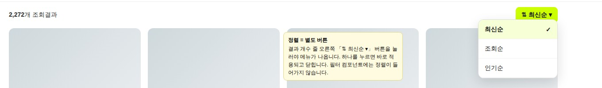
추천 — 결과 개수 줄 오른쪽 「⇅ 최신순 ▾」 (PC·모바일 같은 자리): 지금 정렬 버튼 3개가 있는 자리를 버튼 하나로 바꾸는 것이라 위치가 익숙합니다. 모바일 상단 아이콘은 필터·검색·지도 3개를 그대로 둡니다(IND-8243 결정).
대안 — 모바일 상단 아이콘 줄에 ⇅ 추가(4개): 「아이콘 3개」 결정과 어긋납니다. 두 경우 모두 메뉴에서 하나를 누르면 바로 적용됩니다.
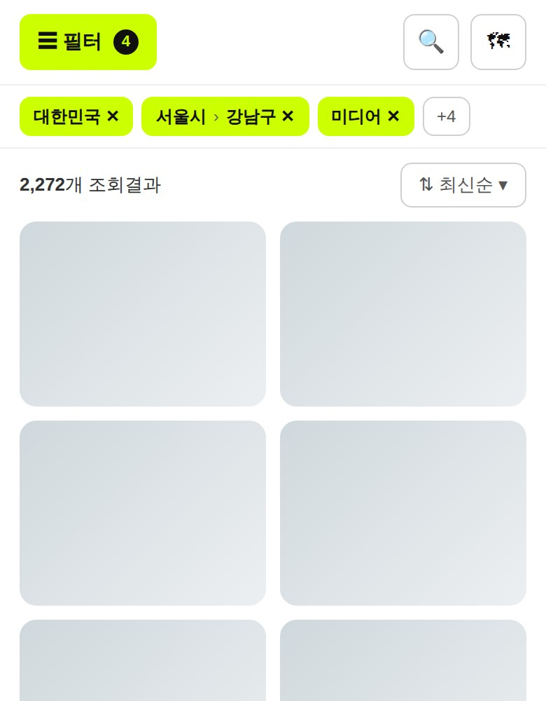
확인할 사항: 정렬 버튼을 결과 개수 줄(추천)에 둘지, 모바일 상단 아이콘 줄에 둘지 골라 주십시오.
태블릿과 VR 이 모두 1024_%s.jpg 를 쓰고 VR 전용 해상도가 없습니다. 오너 제안은 신규 콘텐츠부터 태블릿·VR 을 1536 으로 생성·제공하고 레거시는 1024 를 유지하는 것입니다.
1024_%s.jpg
1536_%s.jpg
tile_info
null
cube:[]
1024_*
1536_*
없는 71개는 초기 타일 구조입니다(place 100 37 · 1722 30 · 275 3 · 329 1). 512_* 도 같습니다.
512_*
krpanotools/krpano_config/multires_*.config
panoBatch/a.parsePanoListXml.php
a.insertNewPano.php
_panoTileInfoGuard.php
a.createCyberTourXML.php
_BATCH
_multiLanguage
a.krpanoXml.php
a.krpanoXmlForIndoorMap.php
look360_ucc/a.getKrpanoXml.php
krpano-xml-builder.ts
panostory-xml-builder.ts
회의 후 정리: 결정 내용을 IND-9187 에 기록하고 제목의 「(주간회의 후)」 표시를 뗍니다. 발주 여부는 오너 지시로 정합니다.
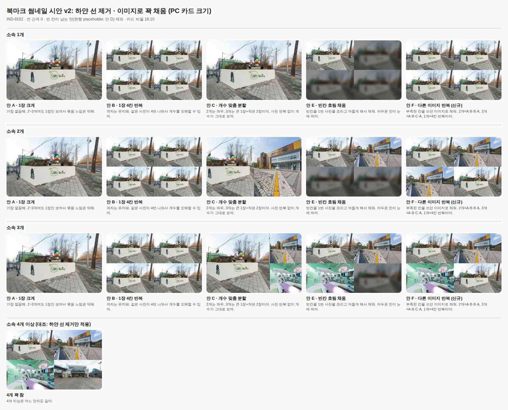
소속 콘텐츠가 4개 미만이면 빈 칸 placeholder 가 정신없어 보입니다(11/03 메모 #13). v2 공통: 칸 간격 0 · 안 D 제외.
정할 것: ① 어떤 안 ② 구현 발주 여부. 카드 b0a8abd9 에 답합니다(F 는 Other · «칸 간격 0» 함께).
b0a8abd9
지금은 vr-info 「외부 VR 보기」를 누르면 안내 화면 없이 새 탭으로 외부 사이트가 열립니다. 이 선택이 IND-9153 W3 구현을 막고 있습니다.
정할 것: ① 어떤 안으로 갈지 ② 자동 이동 시간과 버튼 구성을 시안대로 둘지. 카드 99f04e7e 에 답합니다(코멘트 말고 카드에서).
99f04e7e
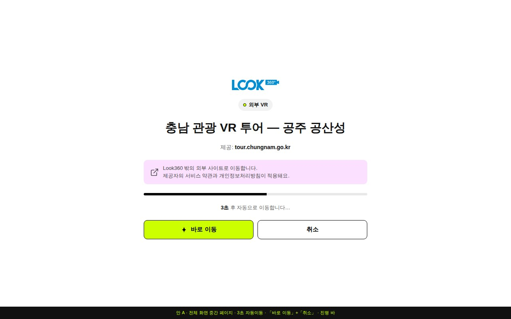
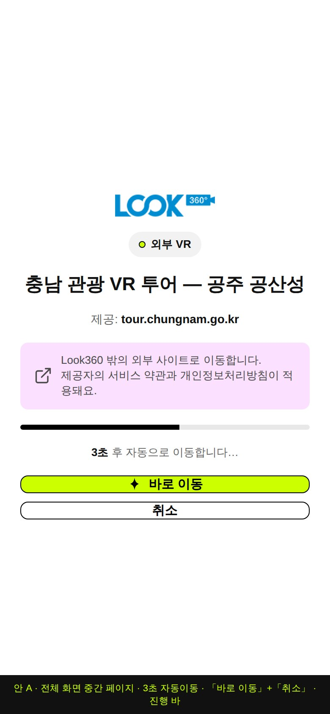
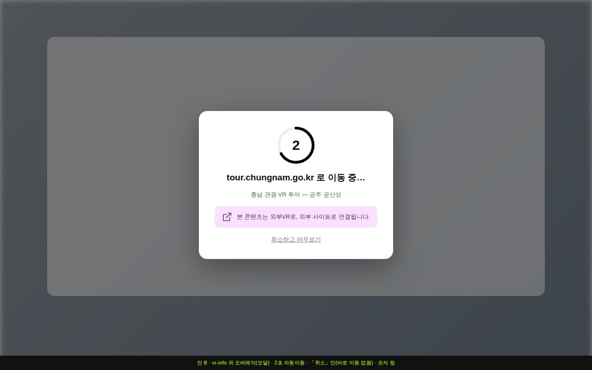
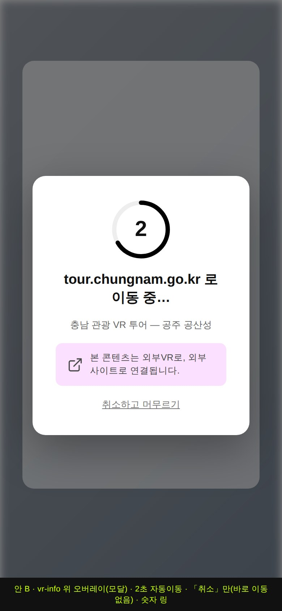
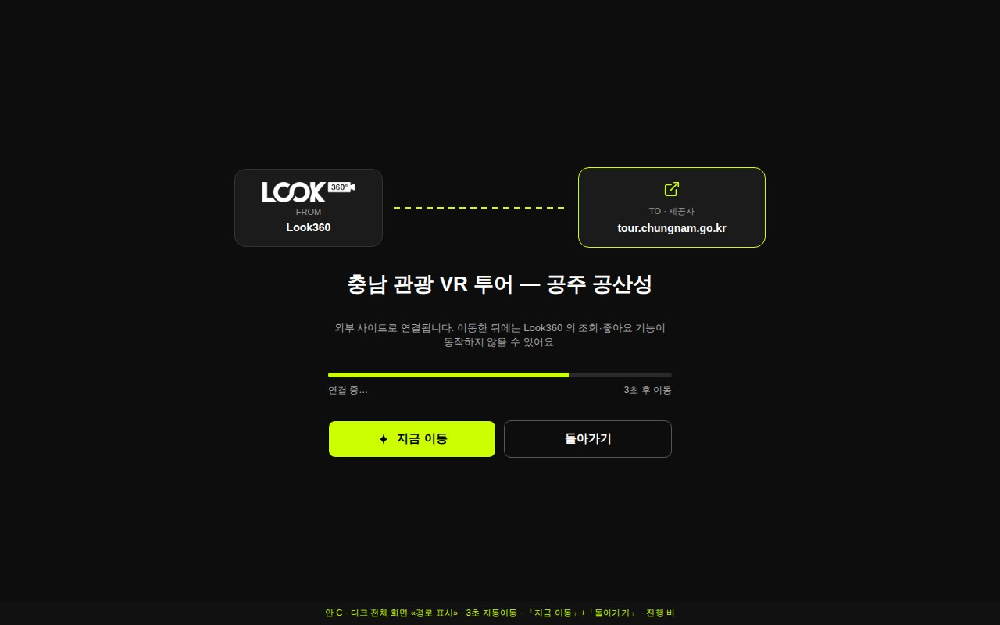
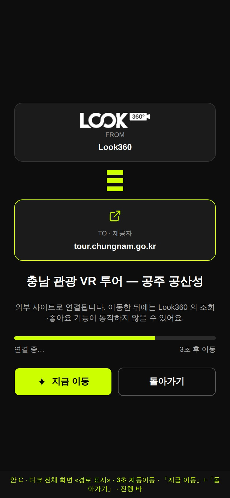
DB 는 읽기만 했고 반영 0건입니다. 시트 검토가 끝나면 확정된 행만 반영하고, 반영 전후 vr-list·검색 노출 건수를 실측해 보고합니다.
상세 기록: ~/weeklychart-chart/reports/2026-11-06-weeklychart-data-audit.md(커밋 3ea6d33) · 주차별 판정표 2026-11-06-kpop-genre-audit-verdict.tsv.
~/weeklychart-chart/reports/2026-11-06-weeklychart-data-audit.md
3ea6d33
2026-11-06-kpop-genre-audit-verdict.tsv
4fc11190
282a01cd
11c322be
abc68199
e67ce054
ce9f2840
8a8dc63f
IND-8880 카드 ec5dccc3 은 안건 1 회의 결과로 정리합니다. IND-9152 b0a8abd9 · IND-9172 99f04e7e 는 안건 3·4 입니다.
ec5dccc3
cancelled
b739001a
11/03 회의 메모 26건: kabkee_works/memo/2026-11-05-quick-memo-recovered.md
kabkee_works/memo/2026-11-05-quick-memo-recovered.md
f3ad4ef3
Section 08
확인 도장 뒤 재작업·방향 변경이 생긴 건입니다. 완료로 보고하지 않습니다.
look360_v3_client
nestjs-look360-api
look360_platform_admin
Look360_ksq1.2
Look360_Platform_Project
cron
weeklychart-chart
레거시 정합을 끝까지 밀어 회귀까지 되돌렸고, 외부VR 과 vr-list 필터는 이번 회의의 결정을 기다리고 있습니다.